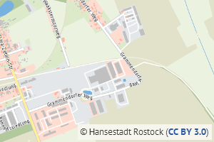
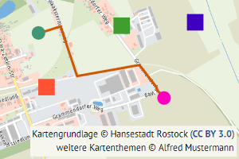

Ausgabeformate PNG, JPEG und GeoTIFF
Wenn Sie als Ausgabeformat PNG, JPEG oder GeoTIFF verwenden, werden die Kartenbilder als Rasterbilder ausgegeben. Diese unterliegen der freien Lizenz Creative Commons Namensnennung 4.0 (CC BY 4.0). Somit dürfen Sie die Kartenbilder nutzen, in jedwedem Format oder Medium vervielfältigen und weiterverbreiten sowie remixen, verändern und auf ihnen aufbauen, und zwar für beliebige Zwecke, auch und vor allem kommerziell. Sie müssen allerdings bei jedweder Art der Nutzung auf die Urheberschaft der Hansestadt Rostock hinweisen:


Im einfachsten Fall, also wenn Sie die Kartenbilder nutzen, vervielfältigen und/oder weiterverbreiten, reicht ein einfacher Hinweis auf die Urheberschaft – etwa unten rechts in der Ecke (wie im Beispiel gezeigt). Sie können den Hinweis natürlich auch außerhalb der Karte platzieren oder in einem Begleittext unterbringen.
Wenn Sie die Kartenbilder remixen, verändern und/oder auf ihnen aufbauen, dann sollte der Hinweis um ein Wort wie „Kartengrundlage“ ergänzt werden (wie im Beispiel gezeigt). Somit wird deutlich, dass sich die Angabe der Urheberschaft auf die Kartenbilder aus dem Stadtteillotsen Rostock bezieht.